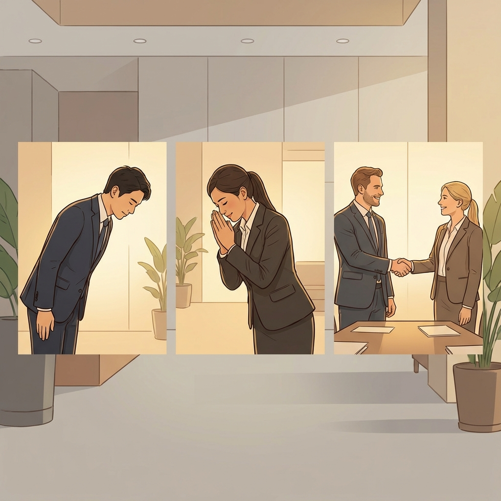

Instructions: Read the text below. Match each tool (1-5) to a person (A-E). Write the letter in the box. Not all letters are used.
"I'd like to introduce you to our school board. Standing over there is Anna, who's chief surgeon at the local hospital. Next to her is Ben, who builds beautiful wooden furniture in his workshop. Carlos runs the Italian restaurant on the high street. You've probably met Diana - she teaches mathematics here at the school. And finally, Eric takes all our school photos and captures special events."
A Anna | B Ben | C Carlos | D Diana | E Eric
1. scalpel _______ 2. whisk _______ 3. tripod _______ 4. guitar _______ 5. saw _______
1. Complete the sentences with the words in the box.
behavior | consider | judge | manners | rude | smiling | social media | tip
1. Look at these behaviors. Circle how acceptable you think the behavior is.
10 = Very rude 1 = It's fine
Speaking on your phone on public transportation
⭘ 10 ⭘ 8 ⭘ 6 ⭘ 4 ⭘ 2 ⭘
1
Interrupting someone
⭘ 10 ⭘ 8 ⭘ 6 ⭘ 4 ⭘ 2 ⭘
1
Using your left hand to greet someone
⭘ 10 ⭘ 8 ⭘ 6 ⭘ 4 ⭘ 2 ⭘
1
Sending e-mails during a meeting
⭘ 10 ⭘ 8 ⭘ 6 ⭘ 4 ⭘ 2 ⭘
1

1 In many countries around the world, no matter what generation you are, there are some key things that are considered polite behavior. Turning your phone off at dinner, turning it down on public transportation, not interrupting colleagues, saying please and thank you, and offering seats to those less able to stand than you are all considered appropriate and polite behavior in many cultures. Although most people agree these behaviors are polite, there is a big difference in politeness between the generations. It was once considered polite to stand when someone left the dinner table, but this is no longer the case. Additionally, older generations are the most likely to judge someone's politeness, but what other factors influence politeness in society?
2 While languages change over time in terms of words being added or taken away, they also change in terms of their structure and use. Some phrases are not really used for their actual meaning but as polite social phrases. For example, when someone says "thank you," how should we reply? Older people are more likely to say "You're welcome," whereas younger people are more likely to say "No problem." The concepts of polite behavior don't just vary by age, they also vary by geographic location. How we display polite behavior in one place is quite different in another.
3 From tipping, to smiling, and how you eat, there are different ways to show politeness across the world. Take tipping for instance, which is polite and expected in countries such as the U.S.A. However, in Japan tipping is not expected in any situation and may even create a difficult situation by offending someone. The hand you use to do different things is not important in most European cultures, but in India the left hand is considered unclean and shouldn't be used to eat, greet, or exchange money. Some people now even argue that asking for directions is rude. People have phones for that and should not need to interrupt other people.
4 This is not the only influence technology is having on what is considered polite behavior. Cell phones have changed what is considered polite behavior in many situations. To some people even just having your phone at the dinner table is thought to be impolite. An even greater number are likely to consider speaking on the phone during dinner as rude. However, some people argue that there are differences in this depending on people's age. Take sending e-mails in a meeting from your phone. Many younger people are likely to consider this as acceptable whereas older people are much more likely to have a negative reaction and find this rude. Overall those under 30 are arguably much more tolerant of people using cell devices at a meal, during a meeting, or in a class. Younger generations simply have a different perspective on what is socially acceptable behavior when it comes to using technology. Digital devices are not only changing how we behave but also what we consider polite behavior.
5 The concept of politeness varies greatly across cultures and generations. What is acceptable in one context may cause great offence in another. Adapting our behavior to suit other people and the situation is a skill we all need to learn.
GLOSSARY
offend (v) to make someone
upset and angry by doing or saying something
Topic sentences are usually one of the first two sentences of each paragraph. They contain the main idea of the paragraph and everything in that paragraph should support the main idea. Reading topic sentences is a good way to scan a text quickly.
1. Read What does polite mean to you? and underline the topic sentences in paragraphs 2-4.
2. Match the main ideas below with paragraphs 2-4.
Read What does polite mean to you? again and complete the paragraph.
The attitudes to polite behavior change depending on age, but also on geography. For example, in response to "thank you," older people are likely to say 1_____________ and younger generations would say 2_____________. In other countries, customs change too: 3_____________ is not common in Japan, and in India you shouldn't use your 4_____________ for eating or greeting. Recently, technology has also changed our polite behavior norms. A few people think 5_____________ with you while you eat is rude, and 6_____________ often do not think it's OK to send e-mails during a meeting.
Only 3 matches (A, B, E). Two items are distractors.
2. Match the main ideas: